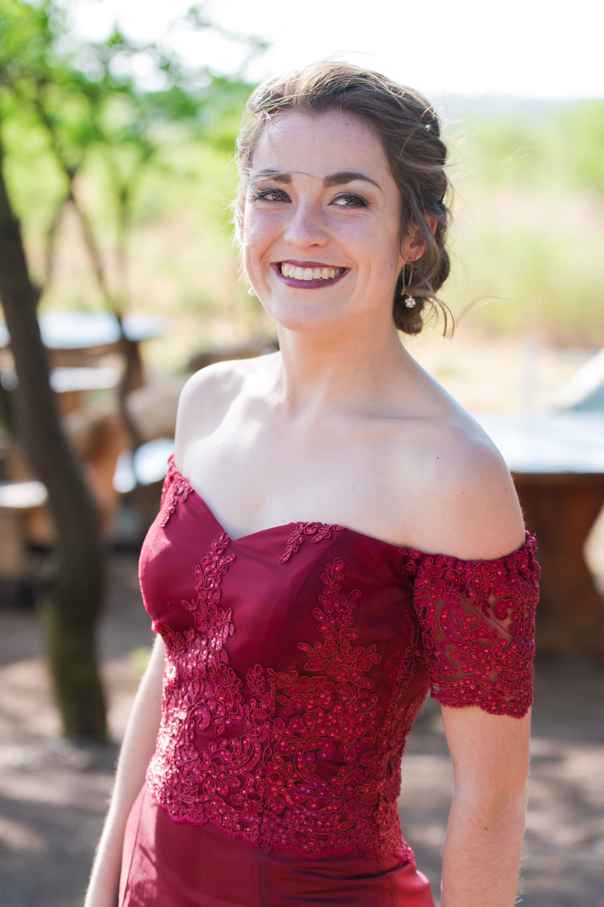

Genevieve Matthews

Email address: genevieve@gmail.com
Cell phone number: 0728529634
Matriculated from: Gimnasium in the year 2017
Studying: BSc Information Technology from NWU Potchefstroom Campus
Religion: Christian
I am a passionate, hardworking individual. I always try to do all my work with excellence giving attention to detail.
I love forming new relationships and always try to find a healthy balance between work, sports, relationships and rest.
I decide on a goal and give my best to accomplish it. I perform well under pressure and complete all of my tasks on time.
I am a quick learner who loves trying new things and if at first I don’t succeed I try again.
Honorary colors for an average of 81.2%
Merit medal for Top 10
Distinctions for Afrikaans, English, Maths and IT
100% school attendance
Pass Ad-maths (University Maths).
Honorary colors for an average of 81%
Awarded as person with the best performance in IT
Awarded as person with the best performance in Math
Distinction for English, Maths, IT, Life orientation
Merit medal for Top 10
Participator in the annual: General Knowledge challenge
Pass Ad-maths (University Maths).
Honorary colors for an average of 82%
Awarded as person with the best performance in IT
Awarded as person with the best performance in CAT(Computer Application Technology)
Pass Ad-maths (University Maths).
Participator in the annual: General Knowledge challenge
Pass ‘Vertolkingskuns-eksamen van Spraak-en Dramakollege’
Part of the school’s student governing body
Christian Student Society leader
Participator of the ATKV unprepared public speaking competition.
Part of the school’s student governing body
Participator of the school`s prepared public speaking competition.
Mr. and Mrs. Gimmie participator.
Finished 12 years of drama collage
Pass the 12th and final year of ‘Vertolkingskuns-eksamen van Spraak-en Dramakollege’
Christian Student Society leader
Christian Student Society deputy-leader
Deputy head girl: Discipline and finances
Athletics team
Netball O/16A
TUKS netball: 8th place
Sedibeng netball league winners
Netball Gauteng championship: 12th place
Netball: D7 team
Netball: Sedibeng team
Netball: 1ste round Gauteng squad
20km marathon: 5th place
Netball: O/17A team
Sedibeng netball league winners
Netball: D7 team
Netball: Sedibeng team
Athletics team: 800m 2nd place, 1500m 2nd place, Top 30 athletics championship.
Cross-country: D7 team 3rd, 2nd in age group for district
Athletics team: Gauteng championships
Part of Gimnasium`s Swim Club.
2nd netball team
Athletics team: D7 team, Gauteng championships
Cross-country:Gauteng championships
Eikenhof Ladies residence: Top 20
Golden Key
Facilitator for First year Python programming.
Class room assistant for first year C++
Academic advisor
Third place at the national Sanren Cyber Security Challenge
Netball 1st steam
Badminton, Table Tennis, Athletics
Eikenhof ladies residence: First year of the year
First year of the year concert dancer
Bingle Serenade
C++
Python
Delphi
Java
C#
HTML
CSS
Java sqcript
VB.NET
SQL
Access
SQL queries
SCRUM
SDLC
Waterfall